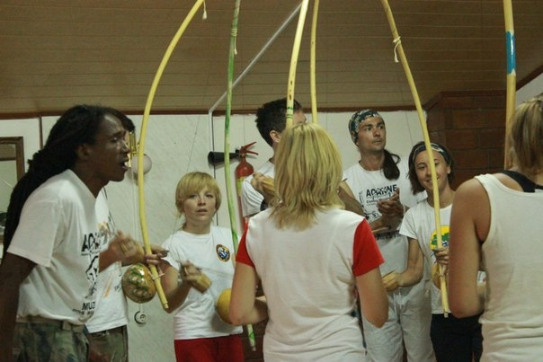
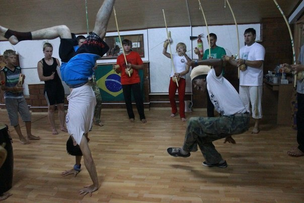
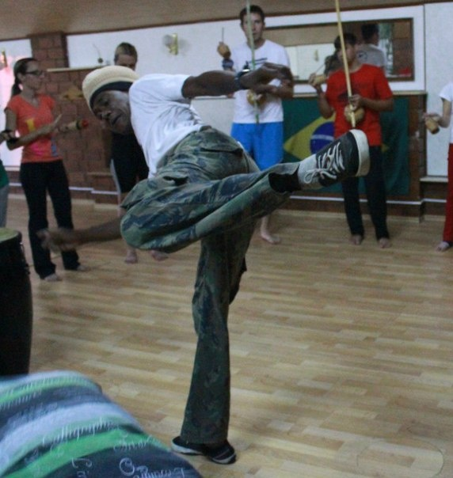
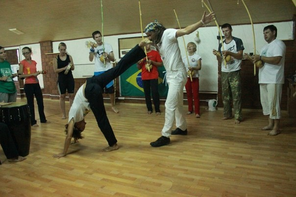
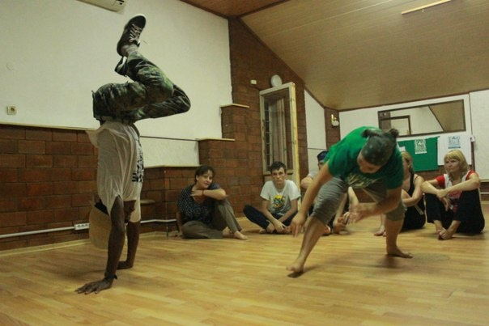
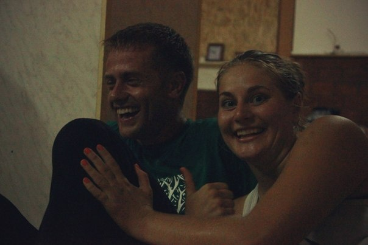
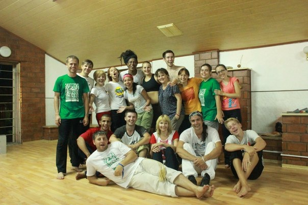
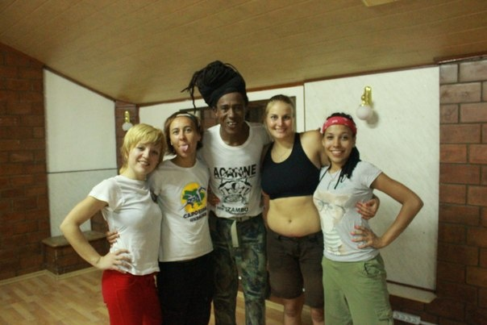

Семинар с Contramestre Veo (день 1)
И вот спустя полтора месяца пришло время моего первого семинара. Ах, как это волнующе, ведь все так ново и незнакомо… Контраместре Вео едет к нам в Крым!
Ждала этого события несколько недель, собрала вещи… Вот, встреча со своей группой… Едем в Севастополь, сразу на первую тренировку… Долгожданная встреча с мастером! Как много незнакомых людей:) Столько эмоций…
Начали тренировку с музыки

/uploads/image/2013/08/16/74b57893fe_original.jpg Семинар с Contramestre Veo (день 1)После была рода!

/uploads/image/2013/08/16/c862ac3f00_original.jpg Семинар с Contramestre Veo (день 1)И старшие, конечно, показывали нам супер-класс!

/uploads/image/2013/08/16/2bfdc30b7d_original.jpg Семинар с Contramestre Veo (день 1)
Потом отрабатывали связки под… Боба Марли! Его музыка развязывает ноги не хуже капа-ритмов.Меня слегка удивила расслабленная, «пьяная» джинга анголы, ведь у нас на тренировках все немного четче.
Но могу сказать только одно: мне понравилось!
После тренировочки у нас снова была рода! Очень понравилось играть с мастером! От него так и прет позитив, хочется только улыбаться, все тело наполняется энергией.

На тренировках я привыкла,что в роде мы все стоим, а вот в анголе оказалось,что игроки сидят по кругу. Это меня немного смутило, невольно хотелось стать ниже!
После роды все уставшие, мокрые, но довольные стали фотографироваться.Вот они мы все с Контра мастером. Это тоже очень веселая часть, если вы понимаете: «Ооооо!!»

И девчата с ВЕО
Закончилась первая тренировка, я жутко счастливая, да, это было супер!:)